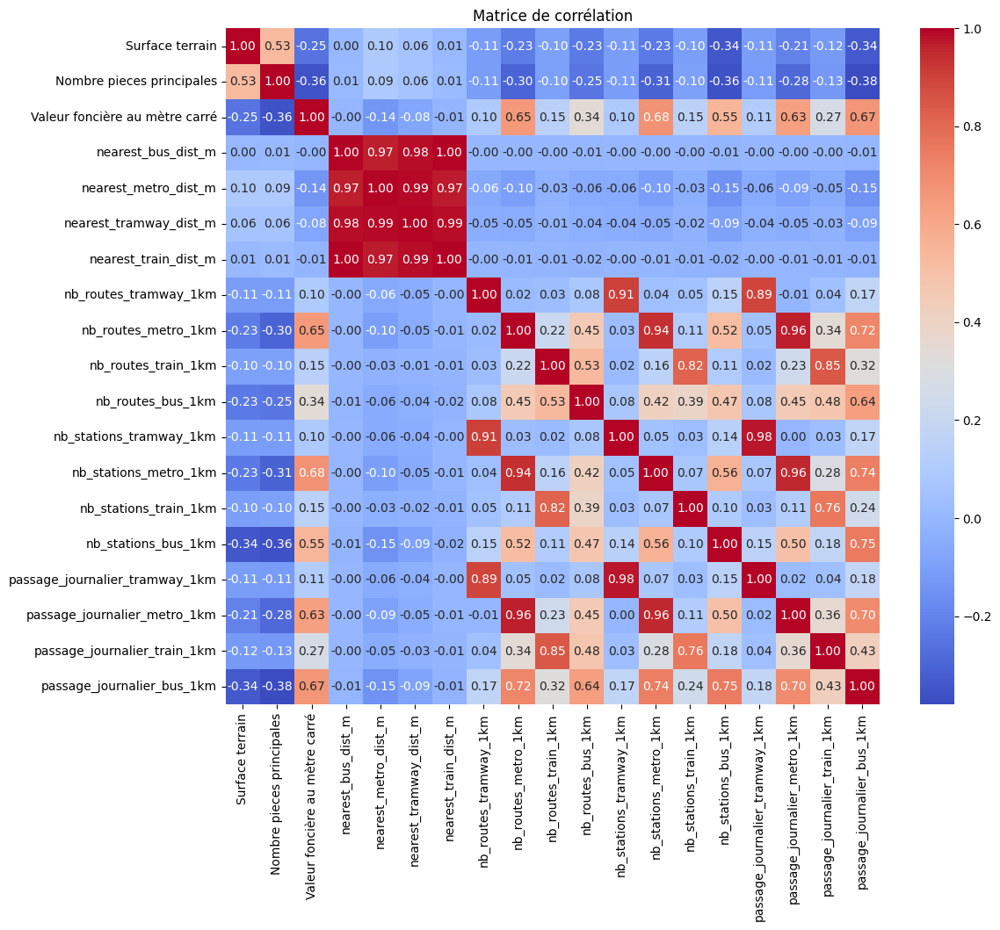
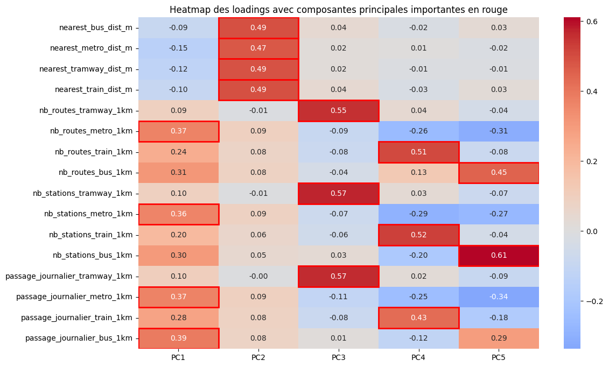
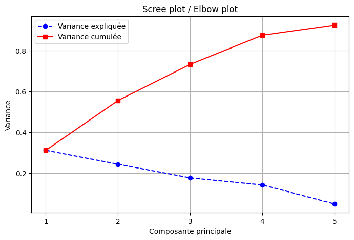
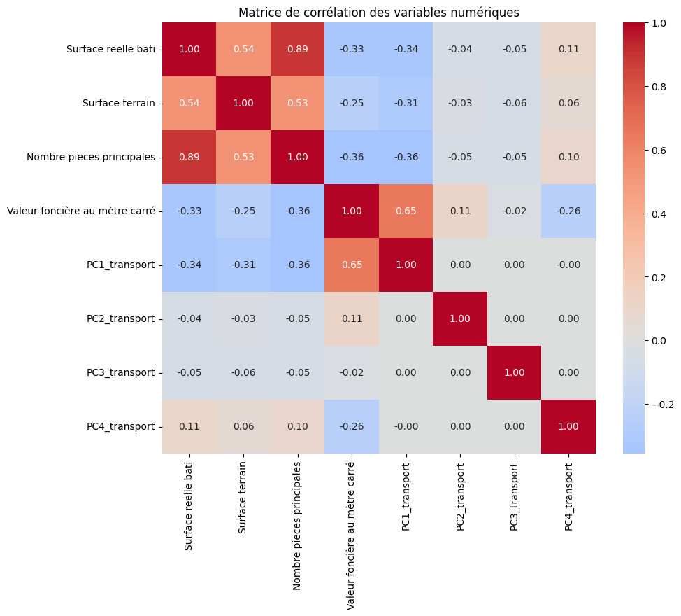

import geopandas as gpdimport pandas as pdimport osif os.getcwd().endswith("notebooks"): os.chdir('..')# Load a sample geospatial datasetgdf = gpd.read_file("cache/results/logements_transport_final.geojson")# Display the first few rows of the GeoDataFrame# ensure every column is shownpd.set_option('display.max_columns', None)print(gdf.keys())gdf = gdf.drop(columns=["adresse", "Commune", "Code commune", "Valeur fonciere","search", "result_score", "point_id", "nearest_bus_stop_id", "nearest_metro_stop_id","nearest_train_stop_id", "nearest_tramway_stop_id"])save_gdf = gdf.copy()
import matplotlib.pyplot as pltimport seaborn as sns numerical_vars = ['Surface terrain', 'Nombre pieces principales','Valeur foncière au mètre carré', 'nearest_bus_dist_m', 'nearest_metro_dist_m', 'nearest_tramway_dist_m', 'nearest_train_dist_m','nb_routes_tramway_1km', 'nb_routes_metro_1km', 'nb_routes_train_1km', 'nb_routes_bus_1km','nb_stations_tramway_1km', 'nb_stations_metro_1km', 'nb_stations_train_1km', 'nb_stations_bus_1km','passage_journalier_tramway_1km', 'passage_journalier_metro_1km','passage_journalier_train_1km', 'passage_journalier_bus_1km']gdf_num = gdf[numerical_vars]corr_matrix = gdf_num.corr()plt.figure(figsize=(12,10))sns.heatmap(corr_matrix, annot=True, fmt=".2f", cmap="coolwarm")plt.title("Matrice de corrélation")plt.show()

from sklearn.preprocessing import StandardScalerfrom sklearn.decomposition import PCA# --- Sélection des variables de transport ---transport_vars = ['nearest_bus_dist_m', 'nearest_metro_dist_m', 'nearest_tramway_dist_m', 'nearest_train_dist_m','nb_routes_tramway_1km', 'nb_routes_metro_1km', 'nb_routes_train_1km', 'nb_routes_bus_1km','nb_stations_tramway_1km', 'nb_stations_metro_1km', 'nb_stations_train_1km', 'nb_stations_bus_1km','passage_journalier_tramway_1km', 'passage_journalier_metro_1km','passage_journalier_train_1km', 'passage_journalier_bus_1km']X = gdf[transport_vars]# --- Standardisation ---scaler = StandardScaler()X_scaled = scaler.fit_transform(X)# --- ACP ---pca = PCA(n_components=5)X_pca = pca.fit_transform(X_scaled)# --- DataFrame des loadings ---loadings = pd.DataFrame(pca.components_.T, columns=[f'PC{i+1}'for i inrange(5)], index=transport_vars)# --- Heatmap des loadings ---plt.figure(figsize=(12,8))sns.heatmap(loadings, annot=True, cmap='coolwarm', center=0, fmt=".2f")# Ajouter un rectangle rouge autour des valeurs "importantes"threshold =0.35for i, col inenumerate(loadings.columns):for j, val inenumerate(loadings[col]):ifabs(val) > threshold: plt.gca().add_patch(plt.Rectangle((i, j), 1, 1, fill=False, edgecolor='red', lw=2))plt.title("Heatmap des loadings avec composantes principales importantes en rouge")plt.show()

# Variance expliquée et cumuléeexplained_variance = pca.explained_variance_ratio_cumulative_variance = explained_variance.cumsum()# Création du DataFramedf_variance = pd.DataFrame({'Composante': [f'PC{i+1}'for i inrange(len(explained_variance))],'Variance expliquée': explained_variance.round(3),'Variance cumulée': cumulative_variance.round(3)})# Affichage avec titredisplay(HTML("<h3>Variance expliquée et cumulée par composante</h3>"))display(df_variance)composantes =range(1, len(variance_expliquee)+1)plt.figure(figsize=(8,5))plt.plot(composantes, variance_expliquee, marker='o', linestyle='--', color='b', label='Variance expliquée')plt.plot(composantes, [sum(variance_expliquee[:i]) for i in composantes], marker='s', linestyle='-', color='r', label='Variance cumulée')plt.xlabel('Composante principale')plt.ylabel('Variance')plt.title('Scree plot / Elbow plot')plt.xticks(composantes)plt.grid(True)plt.legend()plt.show()
Variance expliquée et cumulée par composante
Composante
Variance expliquée
Variance cumulée
0
PC1
0.312
0.312
1
PC2
0.244
0.555
2
PC3
0.177
0.732
3
PC4
0.142
0.874
4
PC5
0.050
0.924

valeurs_propres = pca.explained_variance_# Création du DataFramedf_valeurs_propres = pd.DataFrame({'Composante': [f'PC{i+1}'for i inrange(len(valeurs_propres))],'Valeur propre': valeurs_propres})# Formater les valeurs propres avec 2 décimales pour plus de lisibilitédf_valeurs_propres['Valeur propre'] = df_valeurs_propres['Valeur propre'].apply(lambda x: round(x, 2))# Affichage avec un titre et bordures pour plus de lisibilité (si tu utilises Jupyter Notebook)from IPython.display import display, HTMLprint("=== Valeurs propres des composantes principales (critère de Kaiser) ===")display(HTML(df_valeurs_propres.to_html(index=False)))
=== Valeurs propres des composantes principales (critère de Kaiser) ===
Composante
Valeur propre
PC1
4.98
PC2
3.90
PC3
2.83
PC4
2.28
PC5
0.79
# On ne garde que les 4 premièresfor i inrange(4): gdf[f'PC{i+1}_transport'] = X_pca[:, i]# Liste des colonnes PCA existantes ou variables de transport à supprimertransport_vars = ['nearest_bus_dist_m', 'nearest_metro_dist_m', 'nearest_tramway_dist_m', 'nearest_train_dist_m','nb_routes_tramway_1km', 'nb_routes_metro_1km', 'nb_routes_train_1km', 'nb_routes_bus_1km','nb_stations_tramway_1km', 'nb_stations_metro_1km', 'nb_stations_train_1km', 'nb_stations_bus_1km','passage_journalier_tramway_1km', 'passage_journalier_metro_1km','passage_journalier_train_1km', 'passage_journalier_bus_1km']# Supprimer les colonnes de transport et les anciennes colonnes PCA si elles existentcols_to_drop = transport_vars + [f'PC{i}_transport'for i inrange(5, gdf.shape[1])]gdf = gdf.drop(columns=[c for c in cols_to_drop if c in gdf.columns])# Vérifier le résultatgdf.head()
Date mutation
Code_postal
Surface reelle bati
Surface terrain
Nombre pieces principales
Type local
Valeur foncière au mètre carré
Department
geometry
PC1_transport
PC2_transport
PC3_transport
PC4_transport
0
02/01/2024
93250
37.0
0.0
2.0
Appartement
4135.135135
93
POINT (2.50639 48.89254)
0.404000
-0.261519
4.501771
1.823804
1
08/11/2024
77370
81.0
232.0
4.0
Maison
2888.888889
77
POINT (3.02135 48.55532)
-1.529375
0.316159
-0.383455
0.005348
2
23/02/2024
78260
88.0
408.0
4.0
Maison
3784.090909
78
POINT (2.06194 48.9531)
-1.033312
-0.226212
-0.319326
-0.427200
3
12/07/2024
92140
95.0
0.0
4.0
Maison
7476.315789
92
POINT (2.27316 48.8121)
0.071708
-0.079377
-0.618381
1.538435
4
19/06/2024
93290
63.0
0.0
4.0
Appartement
2523.809524
93
POINT (2.57231 48.95058)
-1.404383
-0.348538
-0.360089
-0.193530
gdf_numeric = gdf.select_dtypes(include='number')corr_matrix = gdf_numeric.corr()plt.figure(figsize=(10,8))sns.heatmap(corr_matrix, annot=True, fmt=".2f", cmap='coolwarm', center=0)plt.title("Matrice de corrélation des variables numériques")plt.show()

print("Nombre de NaN par colonne :")print(gdf_numeric.isna().sum())
Nombre de NaN par colonne :
Surface reelle bati 190
Surface terrain 38
Nombre pieces principales 190
Valeur foncière au mètre carré 0
PC1_transport 0
PC2_transport 0
PC3_transport 0
PC4_transport 0
dtype: int64
from sklearn.linear_model import LassoCVgdf_clean = gdf_numeric.dropna()# Variables explicatives et cibleX = gdf_clean.drop(columns=['Valeur foncière au mètre carré']) y = gdf_clean['Valeur foncière au mètre carré']# Standardisation (très important pour Lasso)scaler = StandardScaler()X_scaled = scaler.fit_transform(X)# Lasso avec validation croisée pour trouver alpha optimallasso = LassoCV(cv=5, random_state=42)lasso.fit(X_scaled, y)# Coefficientscoef = pd.Series(lasso.coef_, index=X.columns)print("Coefficients Lasso :")print(coef.sort_values(ascending=False))# Variables retenues (coef != 0)selected_vars = coef[coef !=0].index.tolist()print("\nVariables sélectionnées par Lasso :")print(selected_vars)
Coefficients Lasso :
PC1_transport 1967.903842
PC2_transport 315.520112
Surface reelle bati -0.000000
Surface terrain 0.000000
PC3_transport -57.127899
Nombre pieces principales -332.056819
PC4_transport -759.454857
dtype: float64
Variables sélectionnées par Lasso :
['Nombre pieces principales', 'PC1_transport', 'PC2_transport', 'PC3_transport', 'PC4_transport']
import statsmodels.api as smX_selected = gdf_clean[['Nombre pieces principales', 'PC1_transport', 'PC2_transport', 'PC3_transport', 'PC4_transport']]y = gdf_clean['Valeur foncière au mètre carré']# Ajouter une constanteX_selected = sm.add_constant(X_selected)# Modèle OLSmodel = sm.OLS(y, X_selected).fit()# Résumé du modèleprint(model.summary())